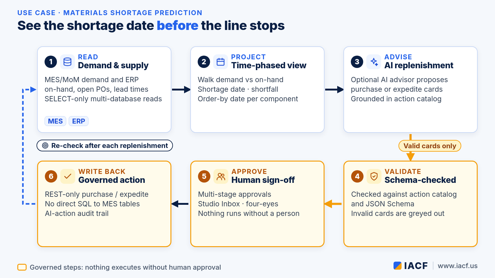
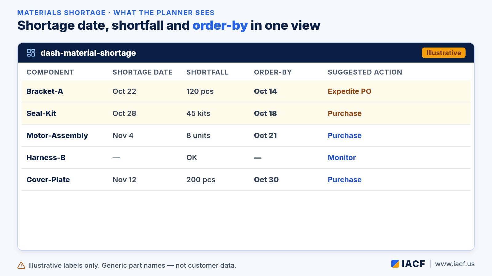
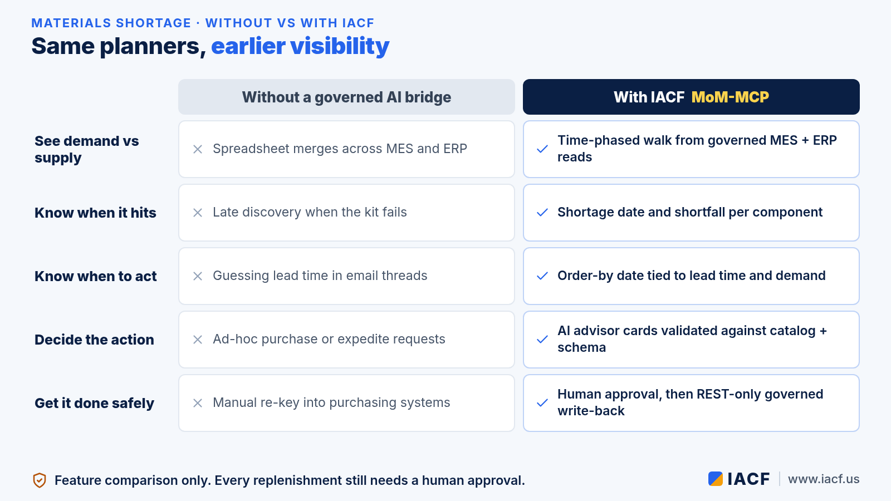

Seeing a Material Shortage Before It Stops the Line
A material shortage is easy to explain after the line stops. The hard part is seeing it early enough to act. Demand lives in MES. On-hand, open purchase orders and lead times live in ERP. When those views stay separate, planners find the gap in a spreadsheet — or on the floor. This article walks through one materials planning loop and shows how IACF's MoM-MCP supports each step. MoM-MCP is the bridge between AI and large language models (LLMs) and the manufacturing applications a plant already runs: MES/MoM, ERP, PLM, CRM, QMS and others.
If you are new to MoM-MCP, start with our introduction to MoM-MCP. For how editions fit together, see Choosing a MoM-MCP edition. This piece is a use-case walk-through, not a product tour.

The scenario
Consider a discrete plant where a materials planner opens the week with a familiar question: which components will run short against upcoming demand, and by when must we order or expedite so the line does not stop? The data is there — kit lists and schedules in MES, inventory and supplier lead times in ERP — but stitching it together by hand costs time and often surfaces the shortage after the kit has already failed.
The scenario is illustrative. It describes how the features work together, not results from a specific customer.
Step by step
1. Read demand and supply across MES and ERP
MoM-MCP connects to manufacturing applications through SELECT-only, multi-database reads (SQL Server, Oracle, Postgres, MySQL, analytics and warehouse sources). Parameterized datasets and a semantic glossary keep the planner's view consistent: MES demand for the horizon ahead, ERP on-hand, open POs and lead times. Nothing in this step writes back. The goal is a single, governed picture of demand versus supply.
2. Project a time-phased shortage view
The Materials Shortage Prediction dashboard (dash-material-shortage) walks component demand against on-hand in an MRP-style, time-phased projection. For each component that will go short, the view surfaces:
- Shortage date — when projected on-hand crosses zero against demand.
- Shortfall — how much is missing at that point.
- Order-by date — when a purchase or expedite must leave, given lead time.
- Suggested action — expedite an open PO, raise a purchase, or monitor.
That is the planner's early warning: not "we are out," but "we will be out on this date unless we act by that date."

3. Optional AI replenishment advisor
When the tenant enables it, an optional AI replenishment advisor turns the projection into proposed purchase or expedite cards. Recommendations are grounded in the tenant's action catalog: the AI can only propose actions that already exist as governed actions, not free-form writes into purchasing systems.
4. Validate before anyone can approve
Every recommendation is checked against the action catalog and a JSON Schema before an Approve button appears. A card with a missing or invalid parameter is greyed out and cannot be approved. Invalid proposals never reach the human decision step.
5. Human sign-off, then governed write-back
Nothing executes on the AI's say-so. The planner submits a valid card into a multi-stage approval path (Studio Inbox, four-eyes rules, escalation). After the last stage approves, MoM-MCP re-checks permissions and calls the preconfigured REST-only action that creates or expedites the purchase. It never writes straight into core MES tables. An AI-action audit trail records whether the action came from an AI recommendation, which approval it went through, and which system it ran against.
For the broader pattern of trigger → skill → validated action → approval → write-back, see Inside the MoM-MCP flow engine.
What changes for materials planners
- Earlier visibility. Shortage date, shortfall and order-by appear before the kit fails on the line.
- One place for MES and ERP context. Demand and supply sit in the same governed view instead of a weekly spreadsheet merge.
- Advice that cannot invent actions. The optional AI advisor proposes only catalog actions, already schema-checked.
- Accountability built in. Approvals and REST write-backs leave a record; core MES tables stay off-limits to direct SQL writeback.

Where it runs
The loop runs in MoM-MCP dashboards and Agent Studio, or in MoM Portal, the standalone end-user Agent Studio that talks to MoM-MCP over MCP and REST. A packaged solution designed in full MoM-MCP can run on MoM-MCP Lite. Any MCP-compatible AI client can use the same governed datasets and actions.
Status note: Materials Shortage Prediction (including the time-phased view and optional AI replenishment advisor), SELECT-only multi-database reads, action validation and REST-only writeback are part of MoM-MCP today. Multi-stage approvals and the AI-action audit trail are newer capabilities along the governed path for actions.
See the shortage before it stops the line
Want to walk the materials shortage view on your own MES and ERP data? Visit www.iacf.us or contact us.
Contact: info@iacf.us